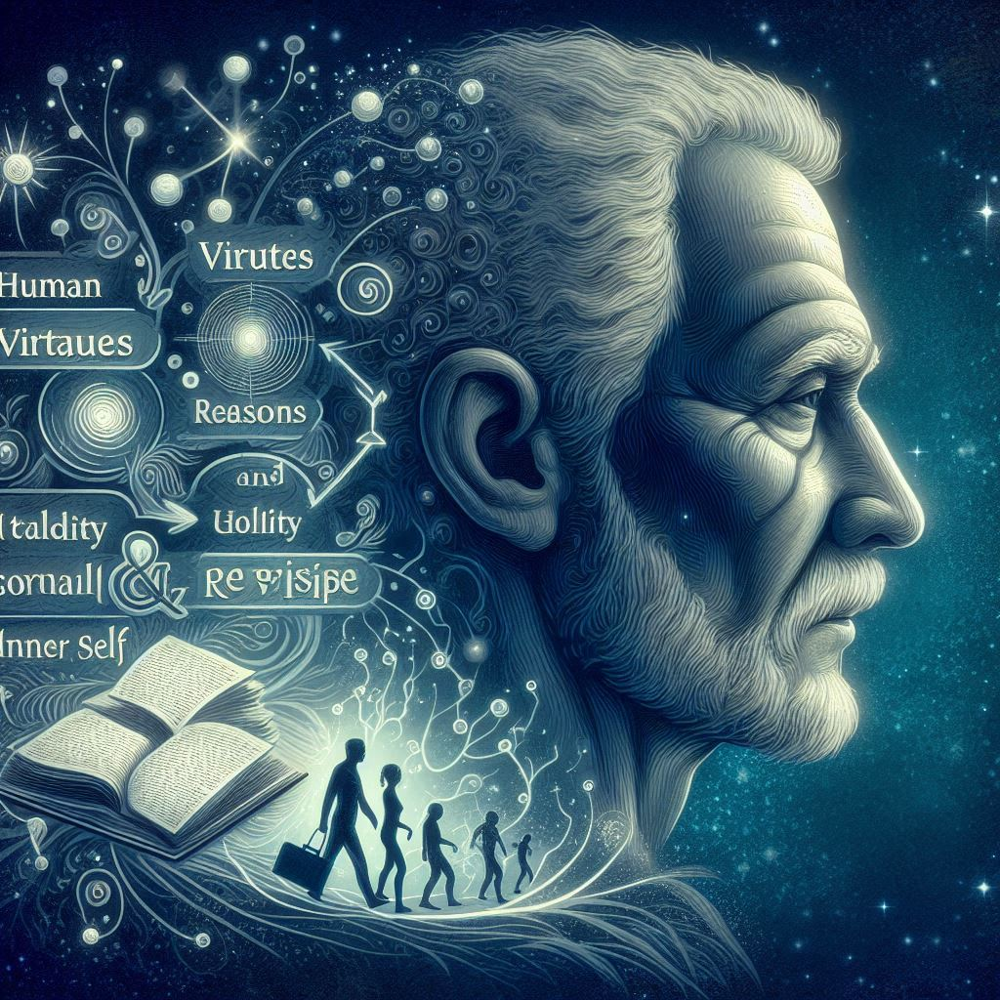

사람을 얻는 지혜
목차
작가
발타자르 그라시안
출판일
2023년
감상평에 대한 AI그림
삶을 살아가면서 사람으로서 근본적인 개인의 성숙에 다가갈 수 있도록 도와주는 책이다.
한 페이지마다 짧지만 뼈있는 단락으로 인간의 미덕, 관계, 현실, 내면 등을 조언해준다.
나는 진정한 어른이 되기 위해 육체적인 성숙에 이어 심적인 성숙에 이르기 위한 노력들이 중요함을 느꼈다.

감상평에 대한 AI감정평가
짧지만 강렬한 단락들이 독자의 마음 깊은 곳을 울립니다.
인간의 미덕과 관계, 그리고 내면에 대한 조언이 진정한 성숙을 위해 얼마나 중요한지 깨닫게 해줍니다.
이 가르침들이 독자에게 큰 울림을 남겼습니다.